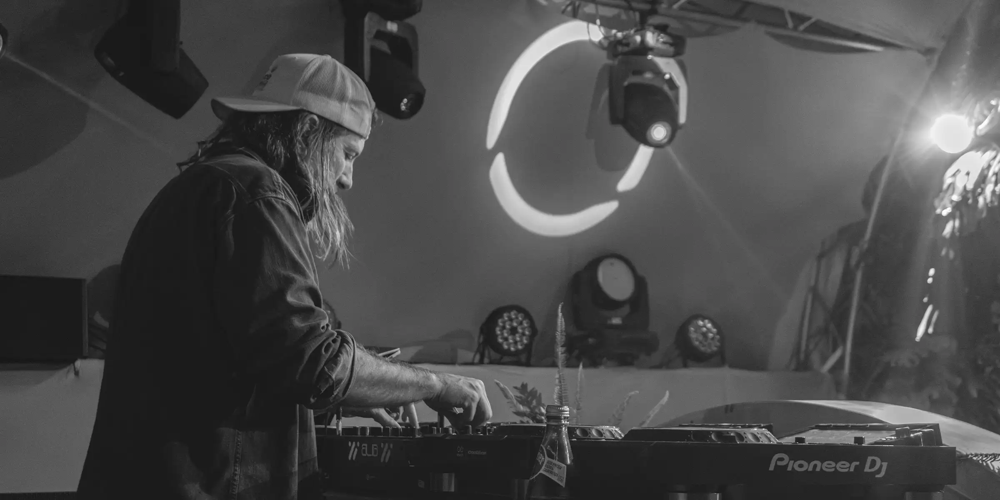

FRAT asumió la dirección creativa y operativa del tour Corona Sunsets en las principales ciudades de Colombia (Medellín, Cali y Bogotá). Bajo un objetivo de expansión y relevancia cultural, diseñamos experiencias de marca auténticas que integraron territorio y música con el ADN premium de Corona.
El proyecto se destacó por una ejecución impecable y una adaptación local estratégica, logrando una conexión orgánica entre la marca y sus consumidores.